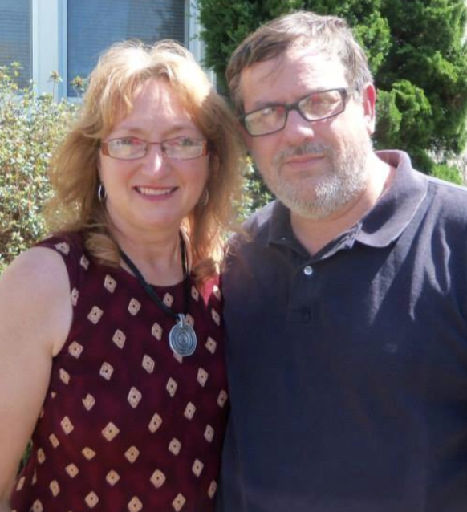
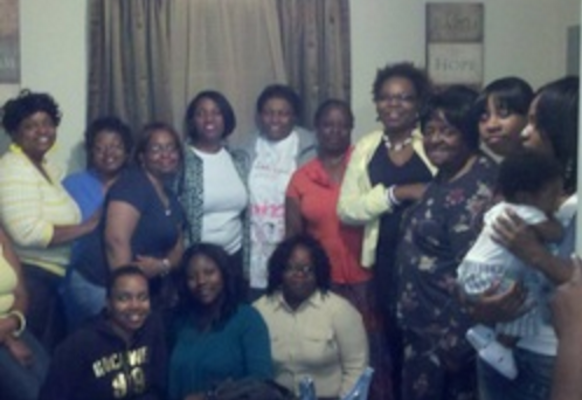

|  |
Rev. Chip AndersonCPC in the Hill Pastor
Along with a pastoral background, Chip has over seventeen years in community development. His background, experience, and personality provide a good foundation and capacity for successful ministry in The Hill. Chip will assist The Hill church family growth in faith through life-on-life discipleship, which includes pastoral care and empowering its members of the congregation. |
|  |
Maxine HarrisAdministrative Assistant
Maxine was born in New York City and came to live in New Haven in 1976 as one of 14 Harris children. They are a very close knit family, who were raised in a Muslim household. Maxine received a certificate in entry level computers from Gateway and has had jobs at the former Sent Phone company and Yale New Haven Hospital. She is also involved in the local PTO organization at her children's school. She has 7 children and two lovely grandchildren. Since placing her faith in Christ she has come to love getting to know the Lord and seeing how His power and love has brought her family together. |